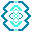
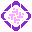
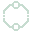
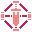
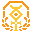

Collector guide
GLHFers 101
What GLHFers are
GLHFers are the collector set this lobby is built around. Public notes describe them as an Ethereum ERC-721 that launched in January 2024. Gigaverse Collectors Hub does not connect to that contract. Every token row in the explorer and the vault is sample data.
Holders use Gigaverse Collectors Hub to browse a mock collection, build a party, read faction halls, and track a sample burn counter. The Auctioneer, shown on the burn page, is the 1/1 tied to floor sweeps in the public story.
Supply and burns
Figures below are labeled sample and unverified for this mockup. Do not treat them as a live supply feed.
- 3,690 original GLHFers supply. sample / unverified
- 420 documented burn baseline used by the lobby counter. sample / unverified
- 3,270 supply left if you subtract that baseline. The home pulse can add a capped session count on top, and that extra is labeled sample burns. sample / unverified
- 10,000 Gigaverse ROMs. sample / unverified
- ROM tiers in the public notes: Silver 5,800, Gold 3,200, Void 850, Giga 150. sample / unverified
The burn chart always closes at the 420 baseline. Recent burn rows on that page are fiction. They are not transactions.
The 7 factions
The seven Masters of the Gigaverse are the factions on Gigaverse Collectors Hub. Gigus appears in lore halls as the creator, not as one of the seven.

Archon keeps the Citadel oaths.
Athena holds the Star Court.
Chobo runs the short sprint lanes.
Crusader plants banners on contested ground.- Foxglove tends the hex garden.
- Overseer logs the night map.

Summoner rings the week gate.
Faction Wars score what people do: quests, sets, events, and game results. A heavier wallet does not buy a higher rank.
GLHFers, ROMs, and Gigaverse
GLHFers and Gigaverse ROMs are two collections in this lobby. GLHFers sit on the Ethereum story. ROMs sit on the Abstract story. The explorer lists both as sample rows with tier, faction, memory, serial, and stub level.
Gigaverse is the game world those factions belong to. Gigaverse Online is described as coming after The Awakening, which Gigaverse Collectors Hub counts down to Oct 12. Launch date TBA. Gigaverse Collectors Hub is a community mockup for collectors, not the game client.
A GLHFer in a party slot is a sample token from the demo vault. A ROM stays in My Vault and in the explorer. They can share a faction tag in the sample set, and they are still different collections.
How to use Gigaverse Collectors Hub
- Explorer filters the 48 sample items. Open a card for tier, faction, memory, serial, and stub.
- My Vault uses Connect wallet (demo). The address 0xDEMO…GLHF is fake. No extension opens and nothing is signed. From there, download a holder card, a vault collage, or open the party builder.
- Party seats 3 to 5 demo GLHFers, shows faction mix and synergy tags, and downloads a PNG card.
- Factions is the season board, map, and hall pages. Each hall has a Faction Vault tab with sample art, pinned lore, and war-room posts.
- Events lists sample events and the Awakening countdown.
- Wiki covers the Masters, the Auctioneer, and Gigus, plus Community Deep Dives. The write form is a demo and does not save.
- Badges shows stacked bronze, silver, and gold progress for a sample profile.
- Burn charts the sample burn path and a holder-conviction panel. That panel is not a price.
Sound stays off until you press the lobby toggle. Paths are relative so the site can live under the GitHub Pages project URL.